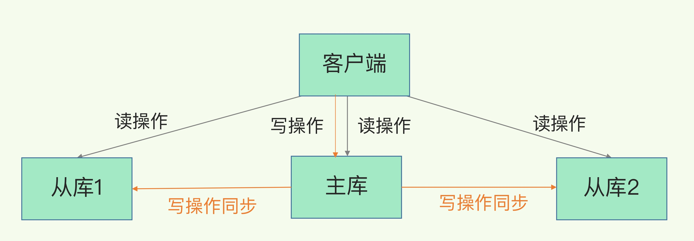

主从库之间采用读写分离。
读操作：主库、从库都可以接收；
写操作：首先到主库执行，然后，主库将写操作同步给从库。

CAP
C - Consistent ，一致性
A - Availability ，可用性
P - Partition tolerance ，分区容忍性
在网络分区发生时，两个分布式节点之间无法进行通信，我们对一个节点进行的修改操作将无法同步到另外一个节点，所以数据的「一致性」将无法满足，因为两个分布式节点的数据不再保持一致。除非我们牺牲「可用性」，也就是暂停分布式节点服务，在网络分区发生时，不再提供修改数据的功能，直到网络状况完全恢复正常再继续对外提供服务。
一句话概括 CAP 原理就是——网络分区发生时，一致性和可用性两难全。
同步机制
通过 replicaof（Redis 5.0 之前使用 slaveof）命令形成主库和从库的关系。
1、主从库间建立连接、协商同步，为全量复制做准备。
从库和主库建立起连接，发送 psync 命令，表示要进行数据同步，主库确认回复，FULLRESYNC响应表示第一次复制采用的全量复制。
psync 命令包含了主库的 runID 和复制进度 offset 两个参数。
2、主库将所有数据同步给从库。从库收到数据后，在本地完成数据加载。
主库执行 bgsave 命令，生成 RDB 文件，接着将文件发给从库。
从库接收到 RDB 文件后，会先清空当前数据库（避免之前数据的影响），然后加载 RDB 文件。
3、主库会把第二阶段执行过程中新收到的写命令（replication buffer中的修改操作），再发送给从库。
主库会在内存中使用 replication buffer，记录 RDB 文件生成后收到的所有写操作。

无盘复制
主节点在进行快照同步时，会进行很重的文件 IO 操作，特别是对于非 SSD 磁盘存储时，快照会对系统的负载产生较大影响。特别是当系统正在进行 AOF 的 fsync 操作时如果发生快照，fsync 将会被推迟执行，这就会严重影响主节点的服务效率。
所以从 Redis 2.8.18 版开始支持无盘复制。所谓无盘复制是指主服务器直接通过套接字将快照内容发送到从节点，生成快照是一个遍历的过程，主节点会一边遍历内存，一遍将序列化的内容发送到从节点，从节点还是跟之前一样，先将接收到的内容存储到磁盘文件中，再进行一次性加载。
主从级联
问题
从库数量很多且都要和主库进行全量复制时，会导致主库忙于 fork 子进程生成 RDB 文件，进行数据全量同步。fork 会阻塞主线程处理正常请求，从而导致主库响应应用程序的请求速度变慢。
传输 RDB 文件也会占用主库的网络带宽，同样会给主库的资源使用带来压力。
解决
通过“主 - 从 - 从”模式将主库生成 RDB 和传输 RDB 的压力，以级联的方式分散到从库上

网络闪断
网络闪断后，主从库会采用增量复制的方式继续同步。
增量复制机制
主库把断连期间收到的写操作命令写入 repl_backlog_buffer 缓冲区
repl_backlog_buffer 是一个环形缓冲区，主库会记录写到的位置，从库会记录已经读到的位置。
连接恢复后，从库给主库发送 psync 命令，并把自己当前的 slave_repl_offset 发给主库，主库会判断 master_repl_offset 和 slave_repl_offset 之间的差距。把 master_repl_offset 和 slave_repl_offset 之间的命令操作同步给从库。
库还未读取的操作被主库新写的操作覆盖，需要全量复制
应对
repl_backlog_size 设置一个合理的值，避免从库还未读取的操作被主库新写的操作覆盖了
使用切片集群来分担单个主库的请求压力
主从数据不一致
根本原因：主从库间的命令复制是异步进行的
直接原因：
- 主从库间的网络可能会有传输延迟
- 处理其它复杂度高的命令（例如集合操作命令）而阻塞同步
- 主从库设置的 maxmemory 不同，如果 slave 比 master 小，那么 slave 内存就会优先达到 maxmemroy，然后开始淘汰数据，此时主从库也会产生不一致
解决方法
- 尽量保证主从库间的网络连接状况良好
- 外部程序监控主从库间的复制进度（INFO replication ），依据从库和主库间的复制进度，设置客户端从库连接
读取数据过期
过期策略
定期删除策略：Redis 每隔一段时间（默认 100ms），就会随机选出一定数量的数据，检查它们是否过期，并把其中过期的数据删除。注意避免大量key同时过期，否则可能因redis删除过期key阻塞用户请求；
惰性删除策略：数据只有被再次访问时，才会被实际删除。从库本身不会执行删除操作，如果客户端在从库中访问留存的过期数据，从库并不会触发数据删除。在 3.2 版本后，如果读取的数据已经过期了，从库虽然不会删除，但是会返回空值。
过期命令
- EXPIRE 和 PEXPIRE：它们给数据设置的是从命令执行时开始计算的存活时间；
- EXPIREAT 和 PEXPIREA：它们会直接把数据的过期时间设置为具体的一个时间点
当主从库全量同步时，如果主库接收到了一条 EXPIRE 命令，那么，主库会直接执行这条命令。这条命令会在全量同步完成后，发给从库执行。而从库在执行时，就会在当前时间的基础上加上数据的存活时间，从库上数据的过期时间就会比主库上延后了
解决
- 使用 Redis 3.2 及以上版本和惰性删除策略
- 在业务应用中使用 EXPIREAT/PEXPIREAT 命令，把数据的过期时间设置为具体的时间点，避免读到过期数据
同步异常
protected-mode：yes ，哨兵实例只能在部署的服务器本地进行访问。no ，其他服务器也可以访问这个哨兵实例。同时，bind 配置项设置为其它哨兵实例的 IP 地址。
cluster-node-timeout:实例响应心跳消息的超时时间。主从切换时间可能较长，就会导致实例的心跳超时（超出 cluster-node-timeout）。实例超时后，就会被 Redis Cluster 判断为异常。有半数以上的实例异常，会导致整个集群挂掉。
其他
slave-serve-stale-data: 从库能否处理数据读写命令，推荐设置为 no，从库只能服务 INFO、SLAVEOF 命令，避免在从库中读到不一致的数据。
slave-read-only：设置从库能否处理写命令， yes 时，从库只能处理读请求，无法处理写请求。